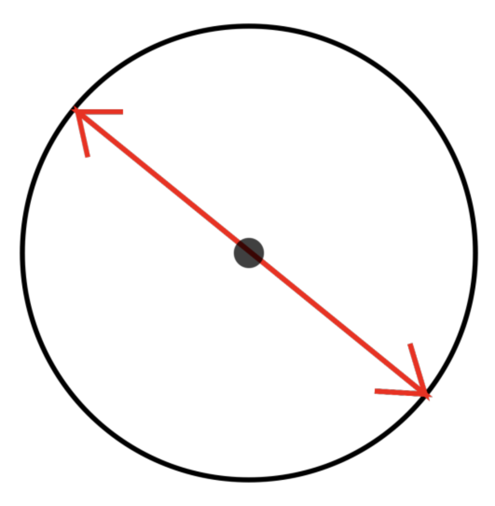
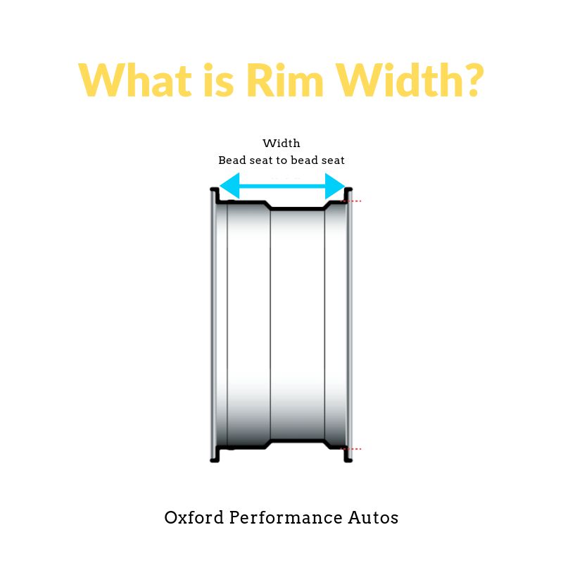

As a follow up to our top wheel size guide (see post below) we’re here to explain the last of what you need to know. In our previous post, you may have seen us mention diameter and rim width. Let’s take a look at how you find these!
It’s important to note that any vehicle will have a range of wheel/tire diameter sizes of several inches that will fit properly. This allows for some flexibility when you want to tailor your choices for looks or performance. What do we measure it in? Wheels are measured in inches, by diameter and rim width. To make a complicated thing easy, the wheel diameter is how wide the wheel is across the centre in inches. See the diagram below for visualisation.
Your rim width is the measurement from bead seat to bead seat. Take a look at the diagram to the right.
To start hunting wheel and tire packages that will fit your vehicle you’ll want to know a few pieces of information. Starting with your wheel diameter. We’ve already established what diameter is but how do you find/measure yours? You’ll want to measure the distance between the two bead seats - the flat spots where the edges of the tire get hugged securely onto the wheel. This measurement should be stamped on the wheel. Next, you’ll want to find the width of your existing tires. Your tire width measurement should be indicated on the side of the tire wall. Often this measurement will be in millimetres, if you require this in inches you’ll have to convert your measurement.
Finally, you’ll need your tires aspect ratio. This is a percentage that should be branded on your tire sidewall.
It’s the height of the sidewall divided by the tire width. A change in the aspect ratio usually means the tire sidewall height changes. This will result in driving performance differences. Hopefully, you’ll now have all the information you need to start looking out for your new set of wheels and tyres! Don’t forget to keep up to date with us on Facebook too:
https://www.facebook.com/Oxfordperformanceautos/